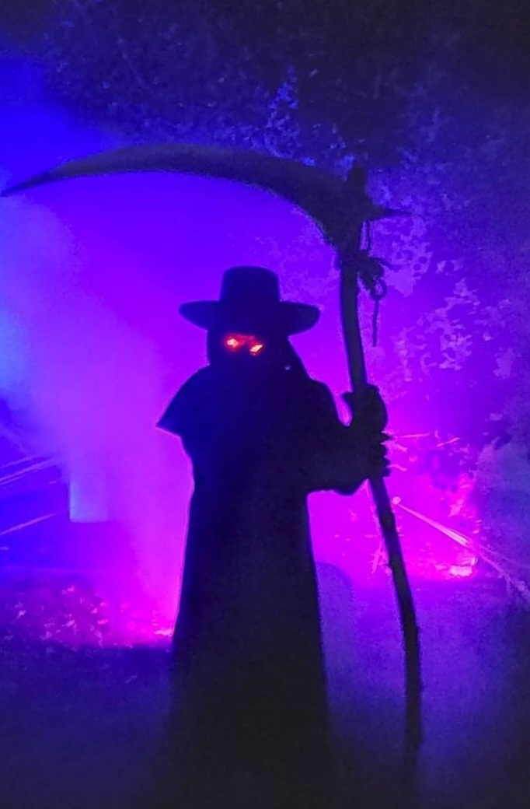

Sets & Lighting
2019, Lighting done for the bridge in of the outdoor haunt I worked, Kennyville Cemetery
2022, Lighting rearranged for all of Kennyville Cemetery, with images here showing the first area
2022, Lighting rearranged for all of Kennyville Cemetery, with images here showing the first area
2020, Lighting done for my front yard Halloween display
2020, Lighting being set up and tested before the set props were put in but with a general idea of where they'd go

2020, How the lighting made my costume look
2020, Another view of the lighting and fog

2023, Dry brush work done for gray cemetery gate footers that were previously solid gray
How they appeared on the gate. Paint for the rest of the gate had been done previously by other haunt staff